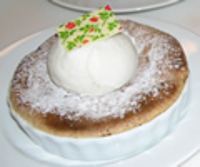

A selection of Chloé recipe
These recipes have been selected by our chefs and represents a selection of the best traditional French cuisine that are easy to make and packed with great flavors.

Summer Peach & Noisette Dessert Gratins
Ingredients:
Ingredients:
- 3 T. unsalted butter
- 1-½ lbs of fresh peaches (sliced into bite sized wedges)
- 2 T dark rum
- 1 t ground cinnamon
- sprinkling of fresh grated nutmeg (use sparingly)
- 3 medium eggs
- 3 T brown sugar
- ½ cup granulated sugar
- ¾ finely ground hazelnuts
Preparation:
Ingredients:
Preparation:
Preheat oven to 400 degrees F. Butter (1 T.) the inside of 8 4-inch porcelain gratin or quiche dishes then sprinkle with sugar to coat. Invert and tap on side to remove excess sugar.
In a medium sized sauté pan melt butter over high heat until sizzling. Add peaches, rum, spices and brown sugar, reduce heat to medium and cook until peaches are tender and juices have reduced (approx. 5-8 minutes). Allow to cool, then distribute among the 8 porcelain dishes.
Using a mixer, combine the eggs and granulated sugar and beat at the highest speed until thickened and pale (approx. 5 minutes). All the ground hazelnuts and whisk until blended. Pour the batter over the peaches and bake until the gratins are firm and golden brown (approx. 20 minutes). When cool dust with confectioner’s sugar. May be served warm or cool. Also great with ice cream or topped with molasses Chantilly.
In a medium sized sauté pan melt butter over high heat until sizzling. Add peaches, rum, spices and brown sugar, reduce heat to medium and cook until peaches are tender and juices have reduced (approx. 5-8 minutes). Allow to cool, then distribute among the 8 porcelain dishes.
Using a mixer, combine the eggs and granulated sugar and beat at the highest speed until thickened and pale (approx. 5 minutes). All the ground hazelnuts and whisk until blended. Pour the batter over the peaches and bake until the gratins are firm and golden brown (approx. 20 minutes). When cool dust with confectioner’s sugar. May be served warm or cool. Also great with ice cream or topped with molasses Chantilly.
Molasses Chantilly
Ingredients:
- ½ cup heavy whipping cream
- 2 T. dark molasses
- ¼ teaspoon ground cinnamon
Preparation:
Using a mixer with whisk attachment, gradually beat cold heavy whipping cream until soft peaks form. Slowly add the molasses, then cinnamon and continue beating until stiff peaks form. Serve immediately or refrigerate for future use.